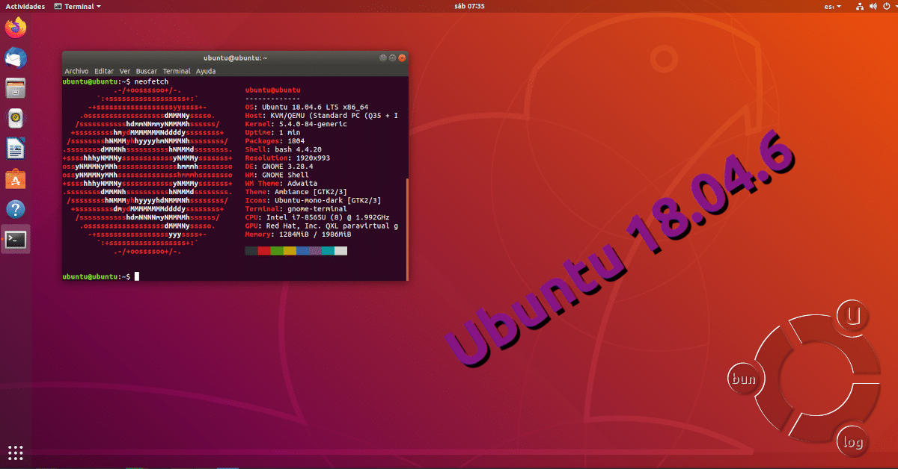
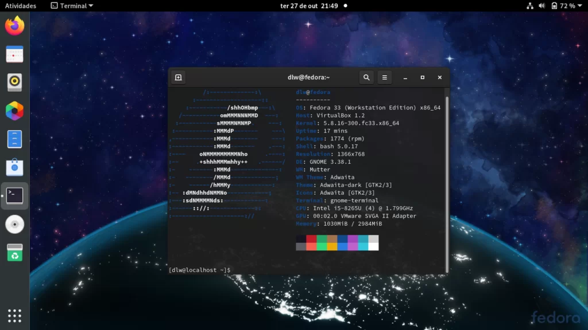
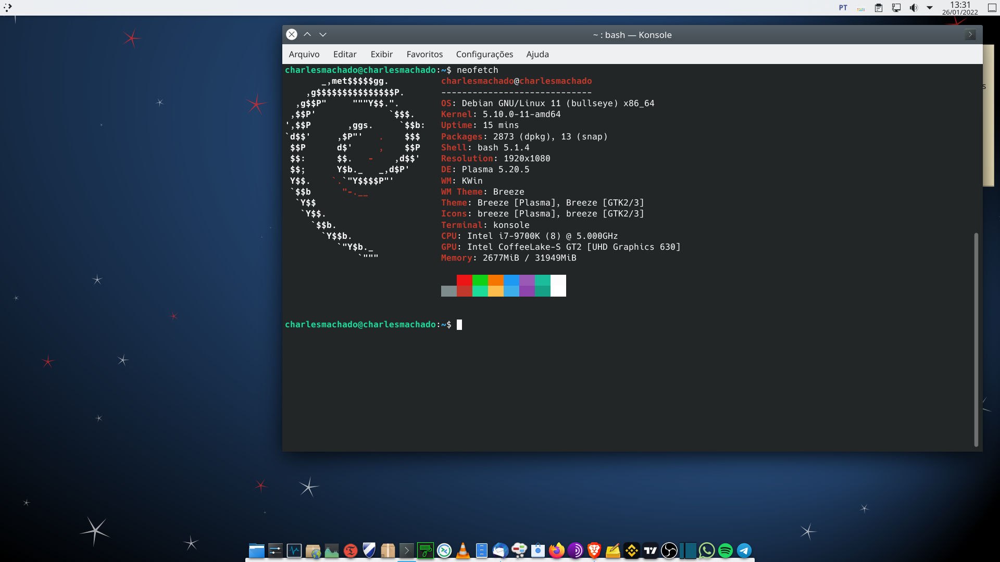

Introdução ao Linux
O que é o Linux e sua história
O Linux é um sistema operacional de código aberto, criado por Linus Torvalds em 1991. Ele se destaca por sua estabilidade, segurança e flexibilidade, sendo amplamente utilizado em servidores, dispositivos embarcados e até mesmo em computadores pessoais.
 Linux Torvalds criador do Linux
Linux Torvalds criador do Linux
Vantagens e benefícios do Linux
Existem várias vantagens em utilizar o Linux:
Código aberto: O código-fonte do Linux é livremente disponível, permitindo que qualquer pessoa estude, modifique e distribua o sistema operacional de acordo com suas necessidades.
Estabilidade: O Linux é conhecido por sua estabilidade e confiabilidade. Ele é projetado para operar continuamente sem a necessidade de reinicializações frequentes.
Segurança: O Linux é considerado um sistema altamente seguro devido à sua arquitetura robusta e às frequentes atualizações de segurança. Além disso, existem várias ferramentas disponíveis para proteger o sistema contra ameaças.
Flexibilidade: O Linux oferece uma ampla variedade de distribuições, cada uma adaptada a diferentes necessidades e preferências. Isso permite que os usuários personalizem seu ambiente de trabalho de acordo com suas preferências.
Visão geral das diferentes distribuições Linux
Existem diversas distribuições Linux disponíveis, cada uma com suas características específicas. Alguns exemplos populares são:
Ubuntu: Uma distribuição amigável e fácil de usar, ideal para iniciantes. É conhecida por sua vasta comunidade de usuários e por receber atualizações regulares de segurança.
Fedora: Desenvolvida pela comunidade em colaboração com a Red Hat, a Fedora é uma distribuição focada em inovação e utilização de tecnologias recentes. É uma opção popular para usuários avançados.
Debian: Uma distribuição estável e confiável, muito utilizada em servidores. É conhecida por seu processo rigoroso de testes e por suas políticas de software livre.
